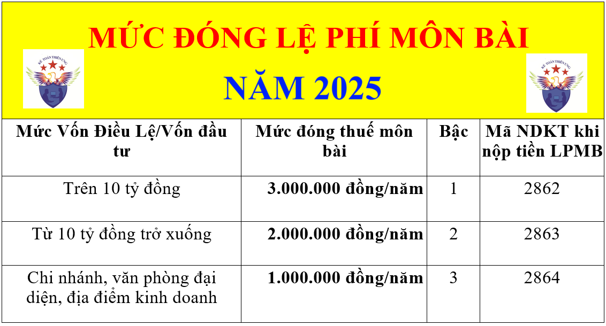

Quy định về lệ phí môn bài năm 2025 mới nhất: Các mức nộp thuế môn bài 2025 cho hộ cá nhân kinh doanh và Doanh nghiệp theo các bậc thuế môn bài quy định tại các văn bản mới nhất.
Căn cứ theo:
- Thông tư 302/2016/TT-BTC, Thông tư 65/2020/TT-BTC.
- Nghị định 139/2016/NĐ-CP, Nghị định 22/2020/NĐ-CP, Nghị định 126/2020/NĐ-CP.
=> Quy định về thuế môn bài áp dụng cho Doanh nghiệp và cá nhân, hộ kinh doanh cá thể cụ thể như sau:
-------------------------------------------------------------------------------------
I. Đối tượng phải nộp lệ phí môn bài:
Người nộp lệ phí môn bài là tổ chức, cá nhân, nhóm cá nhân, hộ gia đình hoạt động sản xuất, kinh doanh hàng hóa, dịch vụ bao gồm:
1. Doanh nghiệp được thành lập theo quy định của pháp luật.
2. Tổ chức được thành lập theo Luật hợp tác xã.
3. Đơn vị sự nghiệp được thành lập theo quy định của pháp luật.
4. Tổ chức kinh tế của tổ chức chính trị, tổ chức chính trị - xã hội, tổ chức xã hội, tổ chức xã hội - nghề nghiệp, đơn vị vũ trang nhân dân.
5. Tổ chức khác hoạt động sản xuất, kinh doanh.
6. Chi nhánh, văn phòng đại diện và địa điểm kinh doanh của các tổ chức quy định tại các khoản 1, 2, 3, 4 và 5 Điều này (nếu có).
7. Cá nhân, nhóm cá nhân, hộ gia đình hoạt động sản xuất, kinh doanh.
1. Cá nhân, nhóm cá nhân, hộ gia đình hoạt động sản xuất, kinh doanh có doanh thu hàng năm từ 100 triệu đồng trở xuống.
- Mức doanh thu từ 100 triệu đồng/năm trở xuống để xác định cá nhân, nhóm cá nhân, hộ gia đình được miễn lệ phí môn bài là tổng doanh thu tính thuế thu nhập cá nhân theo quy định của pháp luật về thuế TNCN.
2. Cá nhân, nhóm cá nhân, hộ gia đình hoạt động sản xuất, kinh doanh không thường xuyên; không có địa điểm kinh doanh cố định.
- Kinh doanh không thường xuyên; không có địa điểm kinh doanh cố định thực hiện theo hướng dẫn tại điểm a khoản 1 Điều 3 Thông tư số 92/2015/TT-BTC ngày 15/6/2015 của Bộ Tài chính.
- Cá nhân, nhóm cá nhân, hộ gia đình không có địa điểm kinh doanh cố định hướng dẫn tại khoản này bao gồm cả trường hợp cá nhân là xã viên hợp tác xã và hợp tác xã đã nộp lệ phí môn bài theo quy định đối với hợp tác xã; cá nhân trực tiếp ký hợp đồng làm đại lý xổ số, đại lý bảo hiểm, đại lý bán đúng giá thực hiện khấu trừ thuế tại nguồn; cá nhân hợp tác kinh doanh với tổ chức theo quy định của pháp luật về thuế thu nhập cá nhân.
3. Cá nhân, nhóm cá nhân, hộ gia đình sản xuất muối.
4. Tổ chức, cá nhân, nhóm cá nhân, hộ gia đình nuôi trồng, đánh bắt thủy, hải sản và dịch vụ hậu cần nghề cá.
5. Điểm bưu điện văn hóa xã; cơ quan báo chí (báo in, báo nói, báo hình, báo điện tử).
6. Hợp tác xã, liên hiệp hợp tác xã (bao gồm cả chi nhánh, văn phòng đại diện, địa điểm kinh doanh) hoạt động trong lĩnh vực nông nghiệp theo quy định của pháp luật về hợp tác xã nông nghiệp
- Hợp tác xã, liên hiệp hợp tác xã (bao gồm cả chi nhánh, văn phòng đại diện, địa điểm kinh doanh) phải được thành lập, hoạt động theo quy định của Luật Hợp tác xã; Lĩnh vực nông nghiệp hoạt động được xác định theo quy định tại Điều 3 Thông tư số 09/2017/TT-BNNPTNT ngày 17/4/2017 của Bộ trưởng Bộ Nông nghiệp và Phát triển nông thôn, bao gồm cả trường hợp hợp tác xã, liên hiệp hợp tác xã có hoạt động sản xuất, kinh doanh trong nhiều lĩnh vực, trong đó có lĩnh vực nông nghiệp.
7. Quỹ tín dụng nhân dân; chi nhánh, văn phòng đại diện, địa điểm kinh doanh của hợp tác xã, liên hiệp hợp tác xã và của doanh nghiệp tư nhân kinh doanh tại địa bàn miền núi. Địa bàn miền núi được xác định theo quy định của Ủy ban Dân tộc.
8. Miễn lệ phí môn bài trong năm đầu thành lập hoặc ra hoạt động sản xuất, kinh doanh (từ ngày 01 tháng 01 đến ngày 31 tháng 12) đối với:
a) Tổ chức thành lập mới (được cấp mã số thuế mới, mã số doanh nghiệp mới).
b) Hộ gia đình, cá nhân, nhóm cá nhân lần đầu ra hoạt động sản xuất, kinh doanh.
c) Trong thời gian miễn lệ phí môn bài, tổ chức, hộ gia đình, cá nhân, nhóm cá nhân thành lập chi nhánh, văn phòng đại diện, địa điểm kinh doanh thì chi nhánh, văn phòng đại diện, địa điểm kinh doanh được miễn lệ phí môn bài trong thời gian tổ chức, hộ gia đình, cá nhân, nhóm cá nhân được miễn lệ phí môn bài.
=> Nghĩa là trong năm đầu thành lập (trong thời gian được miễn thuế môn bài) -> Nếu DN bạn mở thêm Chi nhánh, văn phòng đại diện, địa điểm kinh doanh: -> Thì CN, VPĐD, ĐĐKD đó cũng sẽ được miễn lệ phí môn bài trong năm đó.
Ví dụ: Kế toán Diệu Tâm thành lập ngày 11/4/2025 (được miễn lệ phí môn bài năm đầu thành lập)
- Ngày 19/9/2025 thành lập Chi nhánh Quận 3 (HCM) => Thì Chi nhánh này cũng sẽ được miễn lệ phí môn bài năm 2025.
- Trường hợp tổ chức thành lập mới, hộ gia đình, cá nhân, nhóm cá nhân lần đầu ra hoạt động sản xuất, kinh doanh trước ngày 25/02/2020 và thành lập chi nhánh, văn phòng đại diện, địa điểm kinh doanh từ ngày 25/02/2020 (nếu có) thì tổ chức, hộ gia đình, cá nhân, nhóm cá nhân, chi nhánh, văn phòng đại diện, địa điểm kinh doanh thực hiện nộp lệ phí môn bài theo quy định tại Nghị định số 139/2016/NĐ-CP ngày 04/10/2016 của Chính phủ.
=> Nghĩa là trường hợp này thì Chi nhánh, văn phòng đại diện, địa điểm kinh doanh sẽ phải nộp thuế môn bài (Nếu thành lấp 6 tháng đầu năm thì nộp mức cả năm. Nếu thành lập 6 tháng cuối năm thì nộp 1/2 mức cả năm).
Ví dụ: Kế toán Diệu Tâm thành lập ngày 11/1/2020. (tức là trước ngày 25/02/2020, trước ngày Nghị định 22 có hiệu lực) -> Nên không được miễn thuế năm đầu thành lập.
- Ngày 19/9/2025 thành lập Chi nhánh Quận 3 (HCM) => Chi nhánh này sẽ phải nộp lệ phí môn bài năm 2025 với mức 50% tức là: 500.000 (do thành lập 6 tháng cuối năm). Nếu thành lập 6 tháng đầu năm thì nộp mức cả năm tức là: 1.000.000.
9. Doanh nghiệp nhỏ và vừa chuyển từ hộ kinh doanh (theo quy định tại Điều 16 Luật Hỗ trợ doanh nghiệp nhỏ và vừa) được miễn lệ phí môn bài trong thời hạn 03 năm kể từ ngày được cấp giấy chứng nhận đăng ký doanh nghiệp lần đầu.
a) Trong thời gian miễn lệ phí môn bài, doanh nghiệp nhỏ và vừa thành lập chi nhánh, văn phòng đại diện, địa điểm kinh doanh thì chi nhánh, văn phòng đại diện, địa điểm kinh doanh được miễn lệ phí môn bài trong thời gian doanh nghiệp nhỏ và vừa được miễn lệ phí môn bài.
- Trường hợp chi nhánh, văn phòng đại diện, địa điểm kinh doanh của doanh nghiệp nhỏ và vừa được thành lập (được cấp Giấy chứng nhận đăng ký hoạt động) kể từ ngày 25/02/2020 (ngày Nghị định số 22/2020/NĐ-CP ngày 24/02/2020 của Chính phủ có hiệu lực thi hành) thì thời gian miễn lệ phí môn bài của chi nhánh, văn phòng đại diện, địa điểm kinh doanh được tính từ ngày chi nhánh, văn phòng đại diện được cấp Giấy chứng nhận đăng ký hoạt động chi nhánh, văn phòng đại diện, địa điểm kinh doanh được cấp Giấy chứng nhận đăng ký địa điểm kinh doanh đến hết thời gian doanh nghiệp nhỏ và vừa được miễn lệ phí môn bài.
b) Chi nhánh, văn phòng đại diện, địa điểm kinh doanh của doanh nghiệp nhỏ và vừa (thuộc diện miễn lệ phí môn bài theo quy định tại Điều 16 Luật Hỗ trợ doanh nghiệp nhỏ và vừa) được thành lập trước ngày Nghị định số 22/2020/NĐ-CP ngày 24/02/2020 của Chính phủ có hiệu lực thi hành thì thời gian miễn lệ phí môn bài của chi nhánh, văn phòng đại diện, địa điểm kinh doanh được tính từ ngày Nghị định số 22/2020/NĐ-CP có hiệu lực thi hành đến hết thời gian doanh nghiệp nhỏ và vừa được miễn lệ phí môn bài.
c) Doanh nghiệp nhỏ và vừa chuyển đổi từ hộ kinh doanh trước ngày Nghị định số 22/2020/NĐ-CP ngày 24/02/2020 của Chính phủ có hiệu lực thi hành thực hiện miễn lệ phí môn bài theo quy định tại Điều 16 và Điều 35 Luật Hỗ trợ doanh nghiệp nhỏ và vừa.
10. Cơ sở giáo dục phổ thông công lập và cơ sở giáo dục mầm non công lập.
III. Mức đóng lệ phí môn bài năm 2025 như sau:
1. Mức đóng lệ phí môn bài đối với Doanh nghiệp:

- Mức thu lệ phí môn bài đối với tổ chức hướng dẫn tại khoản này căn cứ vào vốn điều lệ ghi trong giấy chứng nhận đăng ký kinh doanh hoặc ghi trong giấy chứng nhận đăng ký doanh nghiệp hoặc ghi trong điều lệ hợp tác xã.
- Trường hợp không có vốn điều lệ thì căn cứ vào vốn đầu tư ghi trong giấy chứng nhận đăng ký đầu tư hoặc văn bản quyết định chủ trương đầu tư.
- Tổ chức nêu tại điểm a, b khoản này có thay đổi vốn điều lệ hoặc vốn đầu tư thì căn cứ để xác định mức thu lệ phí môn bài là vốn điều lệ hoặc vốn đầu tư của năm trước liền kề năm tính lệ phí môn bài.
Trường hợp vốn điều lệ hoặc vốn đầu tư được ghi trong giấy chứng nhận đăng ký kinh doanh hoặc giấy chứng nhận đăng ký đầu tư bằng ngoại tệ thì quy đổi ra tiền đồng Việt Nam để làm căn cứ xác định mức lệ phí môn bài theo tỷ giá mua vào của ngân hàng thương mại, tổ chức tín dụng nơi người nộp lệ phí môn bài mở tài khoản tại thời điểm người nộp lệ phí môn bài nộp tiền vào ngân sách nhà nước.
- Tổ chức, chi nhánh, văn phòng đại diện, địa điểm kinh doanh (thuộc trường hợp không được miễn lệ phí môn bài trong năm đầu thành lập hoặc ra hoạt động sản xuất, kinh doanh) được thành lập, được cấp đăng ký thuế và mã số thuế, mã số doanh nghiệp trong thời gian của 6 tháng đầu năm thì nộp mức lệ phí môn bài cả năm;
+) Nếu thành lập, được cấp đăng ký thuế và mã số thuế, mã số doanh nghiệp trong thời gian 6 tháng cuối năm thì nộp 50% mức lệ phí môn bài cả năm.
-> Chi tiết đoạn này các bạn có thể xem Ví dụ ở cuối bài viết.
- Doanh nghiệp nhỏ và vừa chuyển đổi từ hộ kinh doanh (bao gồm cả chi nhánh, văn phòng đại diện, địa điểm kinh doanh) khi hết thời gian được miễn lệ phí môn bài (năm thứ tư kể từ năm thành lập doanh nghiệp):
+) Trường hợp kết thúc trong thời gian 6 tháng đầu năm nộp mức lệ phí môn bài cả năm.
+) Trường hợp kết thúc trong thời gian 6 tháng cuối năm nộp 50% mức lệ phí môn bài cả năm.
Thuế môn bài cho văn phòng đại diện, địa điểm kinh doanh:
- Trường hợp văn phòng đại diện, địa điểm kinh doanh có hoạt động sản xuất, kinh doanh hàng hóa, dịch vụ thì phải nộp lệ phí môn bài.
- Trường hợp văn phòng đại diện, địa điểm kinh doanh không hoạt động sản xuất kinh doanh hàng hóa, dịch vụ thì không phải nộp lệ phí môn bài.
=> Chi tiết xem tại đây nhé:
| Doanh thu bình quân năm | Mức thuế môn bài cả năm |
| Doanh thu trên 500 triệu đồng/năm | 1.000.000 đồng/năm |
| Doanh thu trên 300 đến 500 triệu đồng/năm | 500.000 đồng/năm |
| Doanh thu trên 100 đến 300 triệu đồng/năm | 300.000 đồng/năm. |
- Doanh thu để làm căn cứ xác định mức thu lệ phí môn bài đối với cá nhân, nhóm cá nhân, hộ gia đình (trừ cá nhân cho thuê tài sản) là tổng doanh thu tính thuế thu nhập cá nhân năm trước liền kề của hoạt động sản xuất, kinh doanh (không bao gồm hoạt động cho thuê tài sản) của các địa điểm kinh doanh theo quy định tại Thông tư số 92/2015/TT-BTC ngày 15/6/2015 của Bộ trưởng Bộ Tài chính.
Cá nhân, nhóm cá nhân, hộ gia đình đã giải thể, tạm ngừng sản xuất, kinh doanh sau đó ra kinh doanh trở lại không xác định được doanh thu của năm trước liền kề thì doanh thu làm cơ sở xác định mức thu lệ phí môn bài là doanh thu của năm tính thuế của cơ sở sản xuất, kinh doanh cùng quy mô, địa bàn, ngành nghề theo quy định tại Thông tư số 92/2015/TT-BTC ngày 15/6/2015 của Bộ trưởng Bộ Tài chính.
- Doanh thu để làm căn cứ xác định mức thu lệ phí môn bài đối với cá nhân có hoạt động cho thuê tài sản là doanh thu tính thuế thu nhập cá nhân của các hợp đồng cho thuê tài sản của năm tính thuế.
+) Trường hợp cá nhân phát sinh nhiều hợp đồng cho thuê tài sản tại một địa điểm thì doanh thu để làm căn cứ xác định mức thu lệ phí môn bài cho địa điểm đó là tổng doanh thu từ các hợp đồng cho thuê tài sản của năm tính thuế.
+) Trường hợp cá nhân phát sinh cho thuê tài sản tại nhiều địa điểm thì doanh thu để làm căn cứ xác định mức thu lệ phí môn bài cho từng địa điểm là tổng doanh thu từ các hợp đồng cho thuê tài sản của các địa điểm của năm tính thuế, bao gồm cả trường hợp tại một địa điểm có phát sinh nhiều hợp đồng cho thuê tài sản.
+) Trường hợp hợp đồng cho thuê tài sản kéo dài trong nhiều năm thì nộp lệ phí môn bài theo từng năm tương ứng với số năm cá nhân, nhóm cá nhân, hộ gia đình khai nộp thuế giá trị gia tăng, thuế thu nhập cá nhân.
+) Trường hợp cá nhân, nhóm cá nhân, hộ gia đình khai nộp thuế giá trị gia tăng, thuế thu nhập cá nhân một lần đối với hợp đồng cho thuê tài sản kéo dài trong nhiều năm thì chỉ nộp lệ phí môn bài của một năm.
- Cá nhân, nhóm cá nhân, hộ gia đình, địa điểm sản xuất, kinh doanh (thuộc trường hợp không được miễn lệ phí môn bài) nếu ra sản xuất kinh doanh trong 06 tháng đầu năm thì nộp mức lệ phí môn bài cả năm, nếu ra sản xuất kinh doanh trong 06 tháng cuối năm thì nộp 50% mức lệ phí môn bài của cả năm.
IV. Quy định về việc nộp Tờ khai và Tiền lệ phí môn bài:
1. Thời hạn nộp Tờ khai lệ phí môn bài:
a) Người nộp lệ phí môn bài (trừ hộ kinh doanh, cá nhân kinh doanh) mới thành lập (bao gồm cả doanh nghiệp nhỏ và vừa chuyển từ hộ kinh doanh) hoặc có thành lập thêm đơn vị phụ thuộc, địa điểm kinh doanh hoặc bắt đầu hoạt động sản xuất, kinh doanh thực hiện nộp hồ sơ khai lệ phí môn bài chậm nhất là ngày 30 tháng 01 năm sau năm thành lập hoặc bắt đầu hoạt động sản xuất, kinh doanh.
Trường hợp trong năm có thay đổi về vốn thì người nộp lệ phí môn bài nộp hồ sơ khai lệ phí môn bài chậm nhất là ngày 30 tháng 01 năm sau năm phát sinh thông tin thay đổi.
b) Hộ kinh doanh, cá nhân kinh doanh không phải nộp hồ sơ khai lệ phí môn bài. Cơ quan thuế căn cứ hồ sơ khai thuế, cơ sở dữ liệu quản lý thuế để xác định doanh thu làm căn cứ tính số tiền lệ phí môn bài phải nộp và thông báo cho người nộp lệ phí môn bài thực hiện theo quy định tại Điều 13 Nghị định này.
2. Thời hạn nộp Tiền lệ phí môn bài:
a) Thời hạn nộp lệ phí môn bài chậm nhất là ngày 30 tháng 01 hàng năm.
- Trường hợp kết thúc thời gian miễn lệ phí môn bài trong thời gian 6 tháng đầu năm thì thời hạn nộp lệ phí môn bài chậm nhất là ngày 30 tháng 7 năm kết thúc thời gian miễn.
- Trường hợp kết thúc thời gian miễn lệ phí môn bài trong thời gian 6 tháng cuối năm thì thời hạn nộp lệ phí môn bài chậm nhất là ngày 30 tháng 01 năm liền kề năm kết thúc thời gian miễn.
c) Hộ kinh doanh, cá nhân kinh doanh đã chấm dứt hoạt động sản xuất, kinh doanh sau đó hoạt động trở lại thì thời hạn nộp lệ phí môn bài như sau:
- Trường hợp ra hoạt động trong 6 tháng đầu năm: Chậm nhất là ngày 30 tháng 7 năm ra hoạt động.
- Trường hợp ra hoạt động trong thời gian 6 tháng cuối năm: Chậm nhất là ngày 30 tháng 01 năm liền kề năm ra hoạt động.
Một số ví dụ về kê khai lệ phí môn bài:
Ví dụ 1: Kế toán Diệu Tâm thành lập ngày 18/04/2025 sẽ được miễn lệ phí môn bài năm 2025, nhưng phải nộp Tờ khai lệ phí môn bài năm 2025 (được miễn thuế môn bài năm đầu thành lập), cụ thể như sau:
- Nộp Tờ khai lệ phí môn bài năm 2025 chậm nhất ngày 30/1/2026.
-> Cụ thể: Khi lập Tờ khai lệ phí môn bài thì chọn năm 2025 và chọn vào Cột số (9) trên Tờ khai "Trường hợp được miễn lệ phí môn bài" -> Tích chọn phần "Tổ chức mới thành lập" => Sau khi chọn xong -> Phần mềm sẽ tự động cập nhật Cột số (7) Số tiền lệ phí môn bài phải nộp = 0 (Do năm 2024 năm đầu thành lập nên được miễn lệ phí môn bài).
- Tiếp đó là: Nộp Tiền lệ phí môn bài năm 2026 chậm nhất ngày 30/1/2026.
-> Cụ thể: Khi lập giấy nộp tiền vào ngân sách thì ghi rõ: 00/CN/2026 Lệ phí môn bài mức (bậc...)
- Từ năm 2027 trở đi sẽ phải nộp tiền lệ phí môn bài hàng năm. Hạn chậm nhất là ngày 30/1 hàng năm.
Ví dụ 2: Tiếp theo Ví dụ 1: Ngày 15/9/2025 Cty Diệu Tâm thành lập Chi nhánh A, như vậy Chi nhánh A cũng sẽ được miễn thuế môn bài năm 2025 (do Cty đang trong thời gian miễn thuế môn bài, nên chi nhánh cũng được miễn).
- Chi nhánh phụ thuộc hay độc lập, cùng tỉnh hay khác tỉnh cũng đều được miễn nhé.
- Chi nhánh Nộp Tờ khai lệ phí môn bài năm 2025 chậm nhất ngày 30/1/2026.
- Chi nhánh Nộp Tiền lệ phí môn bài năm 2026 chậm nhất ngày 30/1/2026.
- Chi nhánh Từ năm 2027 trở đi sẽ phải nộp tiền lệ phí môn bài hàng năm. Hạn chậm nhất là ngày 30/1 hàng năm (Mức lệ phí môn bài là 1tr/1 năm).
Ví dụ 3: Tiếp theo Ví dụ 1: Ngày 21/08/2026 Cty Diệu Tâm thành lập Chi nhánh B thì chi nhánh B sẽ phải nộp lệ phí môn bài năm đầu thành lập.
- Khi thành lập thêm chi nhánh B vào thời gian, công ty Diệu Tâm không còn được miễn thuế môn bài nữa, nên chi nhánh B sẽ phải nộp thuế môn bài ngay năm thành lập, tức là năm 2026 mức nộp là: 500.000 (do thành lập 6 tháng cuối năm nên phải nộp 50% mức phải nộp cả năm, từ năm sau trở đi sẽ nộp mức 1.000.000/năm) - Nếu thành lập 6 tháng đầu năm thì mức nộp là: 1.000.000.
- Chi nhánh B Nộp Tờ khai lệ phí môn bài năm 2026 chậm nhất ngày 30/01/2027.
- Chi nhánh B Nộp Tiền lệ phí môn bài cho năm 2026 chậm nhất ngày 30/01/2027 (Lưu ý phần này: Nếu để sang năm 2027 nộp thì sẽ phải nộp luôn cho 2 năm 2026 và 2027 nhé, vì hạn nộp chậm nhất của năm 2027 cũng là ngày 30/1/2027).
Ví dụ 4: Tiếp theo Ví dụ 1: Ngày 14/9/2026 Cty thay đổi vốn điều lệ từ 7 tỷ lên 12 tỷ (tức là mức lệ phí môn bài phải nộp tăng thêm từ Bậc 2 là: 2.000.000 lên Bậc 1 là: 3.000.000)
- Cty sẽ phải nộp Tờ khai lệ phí môn bài, chậm nhất ngày 30/1/2027 (Chậm nhất là ngày 30/1 năm sau năm thay đổi).
- Không phải nộp thêm tiền lệ phí môn bài cho năm 2026 (vì nộp đầu năm rồi) => Nhưng tiền lệ phí môn bài năm 2027 sẽ phải tăng lên là: 3.000.000 hạn nộp chậm nhất là ngày 31/01/2027.
Chú ý: Nếu thay đổi vốn điều lệ => Dù tăng hoặc không tăng mức lệ phí môn bài phải nộp thì vẫn phải nộp Tờ khai lệ phí môn bài nhé.
Ví dụ 5: Tiếp theo Ví dụ 1: Ngày 14/9/2026 Cty thay đổi vốn điều lệ từ 7 tỷ lên 9 tỷ (tức là mức lệ phí bài phải nộp không tăng thêm mà vẫn là Bậc 2: 2.000.000)
- Cty sẽ phải nộp Tờ khai lệ phí môn bài, chậm nhất ngày 30/1/2027 (Chậm nhất là ngày 30/1 năm sau năm thay đổi).
- Còn tiền lệ phí môn bài phải nộp hằng năm vẫn là: 2.000.000.
Cách kê khai thuế môn bài các bạn xem tại đây nhé:
- Người nộp lệ phí môn bài đang hoạt động có văn bản gửi cơ quan thuế quản lý trực tiếp hoặc cơ quan đăng ký kinh doanh về việc tạm ngừng hoạt động sản xuất, kinh doanh trong năm dương lịch (từ ngày 01 tháng 01 đến ngày 31 tháng 12) không phải nộp lệ phí môn bài năm tạm ngừng kinh doanh với điều kiện: => Văn bản xin tạm ngừng hoạt động sản xuất, kinh doanh gửi cơ quan thuế hoặc cơ quan đăng ký kinh doanh trước thời hạn phải nộp lệ phí theo quy định (ngày 30 tháng 01 hàng năm) và chưa nộp lệ phí môn bài của năm xin tạm ngừng hoạt động sản xuất, kinh doanh.
- Trường hợp tạm ngừng hoạt động sản xuất, kinh doanh không đảm bảo điều kiện nêu trên thì nộp mức lệ phí môn bài cả năm.
-------------------------------------------------------------------------------------------------
Các bạn muốn học thực hành tính thuế - kê khai thuế, xử lý hóa đơn chứng từ, quyết toán thuế cuối năm... trực tiếp trên chứng từ thực tế, thì có thể tham gia: Lớp học kế toán thuế thực tế Online tại Kế toán Diệu Tâm